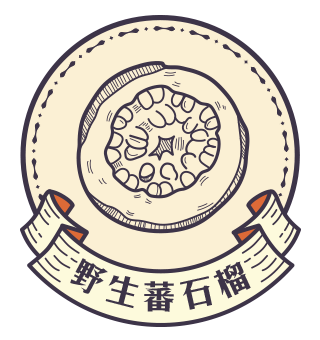
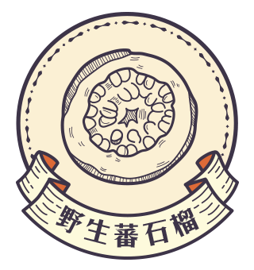
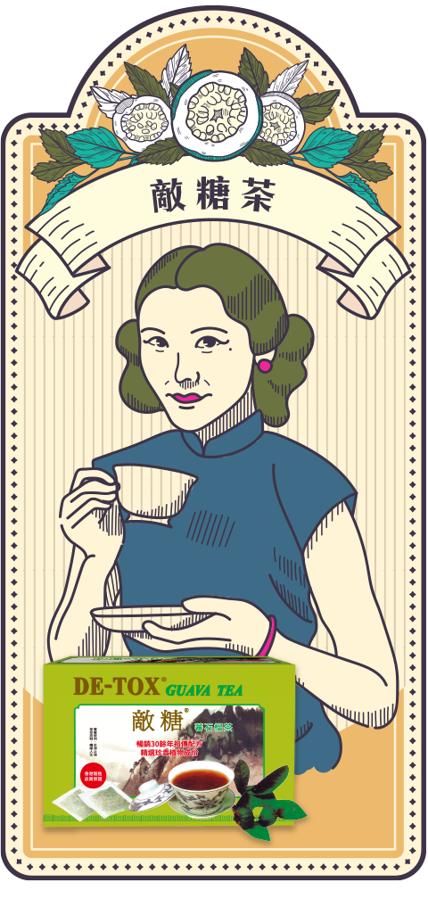
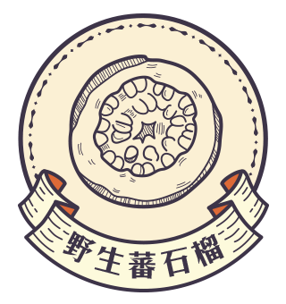
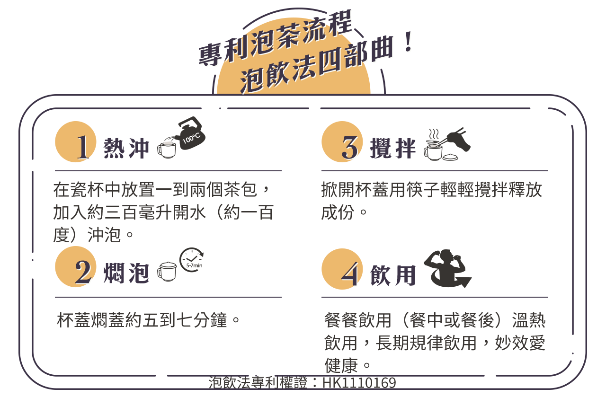
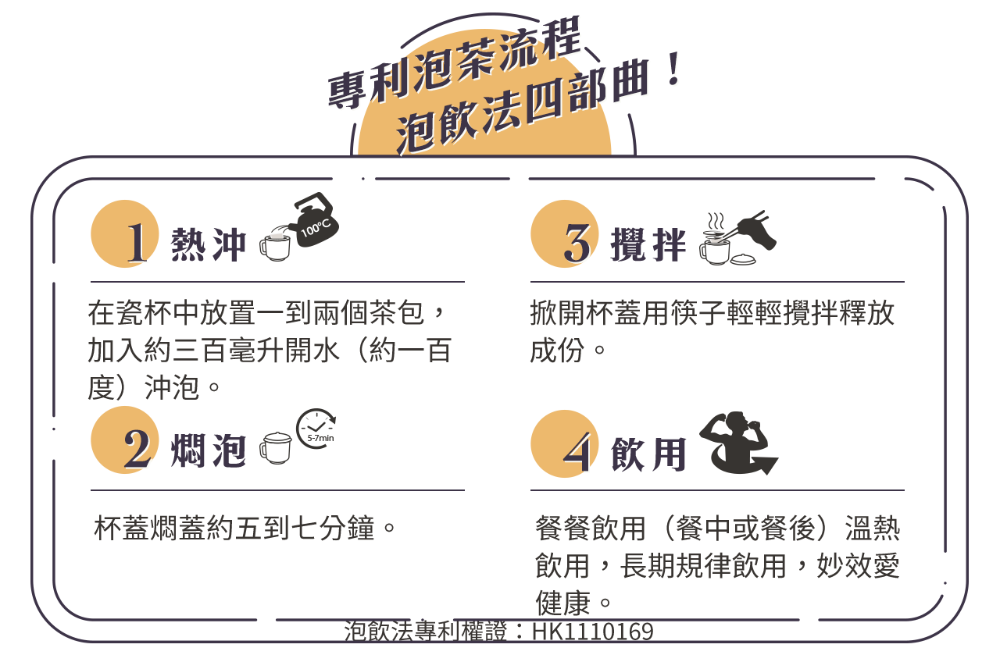

蕃石榴藥用部份為果實和葉，番石榴性平，不寒熱，甘澀微苦，適合關注外食吃太甜人士使用。 中國民間素有食用蕃石榴果和葉來管理身體糖分代謝的食療經驗，因為在蕃石榴果實和葉中含有豐富的微量元素有機鉻，而擔心糖份攝取及管理問題者，亦應留心微量鉻元素的補充。
 


好蓮沱茶以雲南高山發酵普洱沱茶為主，輔以銀杏葉、茉莉花、菊花、紅茶等天然草本原料，獨家配方研製而成。
由野生蕃石榴果、葉及數種優質天然本草茶配製而成，保存了蕃石榴含有的纖維素、維生素、礦物質和果糖。
在蕃石榴果實和葉中含有豐富的微量元素有機鉻、而在蕃石榴葉中，亦發現含有多種重要的多酚化合物，這些成分擁有多種輔助及調節功效。
香港好蓮沱茶富含茶多酚、茶黃素、兒茶素類、類黃酮素、花青素類等多種活性物質，其中以茶多酚含量最高，佔多酚類總量的80%
全面協助調理生理機能，促進新陳代謝，讓外食油膩、太甜、太鹹的問題不再是困擾！
蕃石榴藥用部份為果實和葉，番石榴性平，不寒熱，甘澀微苦，適合關注外食吃太甜人士使用。 中國民間素有食用蕃石榴果和葉來管理身體糖分代謝的食療經驗，因為在蕃石榴果實和葉中含有豐富的微量元素有機鉻，而擔心糖份攝取及管理問題者，亦應留心微量鉻元素的補充。

這一切都始於創始人對茶園的嚴謹把控，從地理位置優越的核心茶區精選有機茶園，為茶料要採摘提供全方位保障。
四周環繞海拔1000米左右的高山，高山氣候差異顯著，降水合適且日照充足是有機茶的種植勝地。
從溫度把控到滋味的判斷，憑藉製茶大師數十餘年製作工藝，嚴守每一步，才能成就一杯好茶。
 

我們是全亞洲少數能做到符合歐盟有機驗證的生產茶廠，流程嚴密品管、全程穿戴消毒衣生產、依有機規範嚴密全場消毒；世界最具權威性Ecocert有機農業認證、香港唯一一家獲得歐盟Ecocert級功能茶品的唯一選擇。